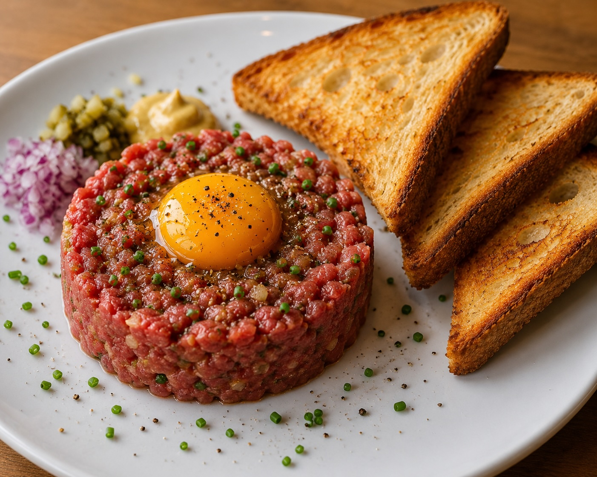

Home
Beef Tartare

Picture: Beef Tartare
Ingredients:
- Raw beef tenderloin
- Egg yolk
- Onion
- Garlic
- Mustard
- Ketchup
- Worcestershire sauce
- Salt
- Black pepper
- Bread slices
- Butter or oil for toasting
Steps:
- Finely chop the raw beef tenderloin.
- Dice the onion and crush the garlic.
- Mix the beef with mustard, ketchup, Worcestershire sauce, salt, and pepper.
- Shape the tartare on a plate and place an egg yolk on top.
- Toast the bread slices until golden and crispy.
- Serve the beef tartare with toasted bread and enjoy.